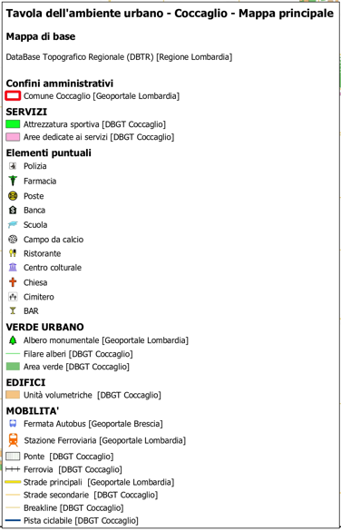

Il progetto
Progetto cartografico sviluppato nell'ambito del Laboratorio di GIS per la pianificazione del corso di laurea magistrale in Tecnologie per la Transizione Ecologica in Agricoltura. L'obiettivo era produrre un'analisi GIS completa del territorio del Comune di Coccaglio (BS), articolata su tre tavole a scale diverse, integrando dati da fonti istituzionali multiple: DataBase Topografico Regionale (DBTR), DataBase GeoTopografico comunale (DBGT), Geoportale Regione Lombardia e DUSAF7.
Il sistema di riferimento adottato per tutte le tavole è EPSG:32632 (WGS 84, UTM 32N). La gestione del progetto è avvenuta su cartella condivisa con struttura organizzata per tipologia di dato, stili dei layer e risultati.
Tavola 1 — Carta di inquadramento territoriale (scala 1:100.000)
Inquadramento del Comune di Coccaglio nel contesto regionale lombardo. La tavola restituisce la rete cinematica (autostrade A4 e A35, SS11, ferrovia), la rete idrografica (Lago di Iseo, fiume Oglio), le aree naturali protette (Rete Natura 2000, RER, aree protette) e il perimetro della DOCG Franciacorta, ottenuto dal PTRA Franciacorta. I comuni limitrofi sono stati identificati tramite la funzione overlay_touches().

Tavola 2 — Mappa dell'ambiente urbano (scala 1:5.000)
Analisi dettagliata del territorio comunale. La mappa principale mostra la distribuzione dei servizi, la rete di mobilità intra-comunale (incluse le piste ciclabili e la viabilità intrapoderale) e il verde urbano. Le mappe accessorie approfondiscono la destinazione d'uso degli edifici (residenziale, produttivo, nuclei di antica formazione), le altezze per classi di 3 m e le volumetrie degli edifici per cinque classi. Tre grafici quantitativi mostrano la composizione delle superfici edificate, la distribuzione delle volumetrie e il rapporto tra superficie edificata e verde urbano.




Tavola 3 — Mappa dell'ambiente extraurbano (scala 1:10.000)
Analisi del territorio extracomunale con focus sull'uso del suolo agricolo. Il territorio risulta a forte vocazione maidicola nella pianura; a ridosso del Monte Orfano compaiono vigneti e oliveti, confermando l'appartenenza alla DOCG Franciacorta. La mappa accessoria (scala 1:70.000) approfondisce la rete ecologica locale, individuando varchi, corridoi, zone di riqualificazione e aree di criticità per la connettività faunistica.